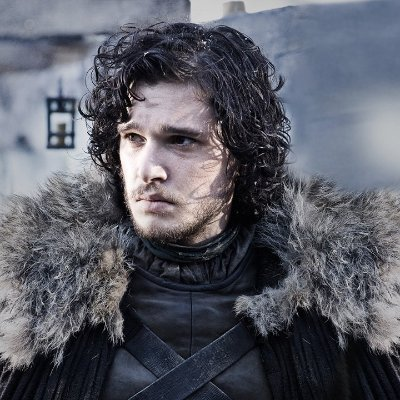

Mostly Just The Well Known Characters
With 8 Seasons and 73 episodes, there is a vast list of characters that make up the Game of Thrones universe (around 160ish not counting
the obvious randoms in the background or the people with like 3 seconds of camera time, cause that would be like an insane amount probably)
Some being short and sweet, others lasting all 8 seasons, but nonethless it is quite a goated cast and I give major props
to the person in charge of casting. Quite a few of the cast started their succesfull acting careers with their roles,
some including Sean Bean (Ned Stark), Peter Dinklage (Tyrion Lannister), and Emilia Clarke (Daenerys Targaryen), among others.
Overall I definitely don't think it would be the same without the passion and skill a lot of these actors brought to their characters.

Jon Snow
Played by Kit Harrington
Favorite Quote: "Wind and words. We are only human, and the gods have fashioned us for love. That is our great glory, and our great tragedy." — Jon Snow
Eddard Stark
Played by Sean Bean
Favorite Quote: "A ruler who hides behind paid executioners soon forgets what death is." — Ned Stark
Robb Stark
Played by Richard Madden
Favorite Quote: "You think I'm fighting this war so they'll sing songs about me?" — Robb Stark
Arya Stark
Played by Maisie Williams
Favorite Quote: "Leave one wolf alive and the sheep are never safe. When people ask you what happened here, tell them the North remembers. Tell them winter came for House Frey." — Arya Stark
Sansa Stark
Played by Sophie Belinda Turner
Favorite Quote: “I'm sure cutting off heads is very satisfying, but that's not the way you get people to work together.” — Sansa Stark
Bran Stark
Played by Isaac Hempstead Wright
Favorite Quote: “How do you know there is an afterwards?” — Bran Stark
Brienne Tarth
Played by Gwendoline Christie
Favorite Quote: "All I ever wanted was to fight for a lord I believed in. But the good lords are dead and the rest are monsters." — Brienne of Tarth
Cersei Lannister
Played by Lena Headey
Favorite Quote: "When you play the game of thrones, you win or you die. There is no middle ground.” — Cersei Lannister
Daenerys Targaryen
Played by Emilia Clarke
Favorite Quote: "So many men have tried to kill me, I don't remember all their names. I have been sold like a broodmare. I've been chained and betrayed, assualted and defiled. Do you know what kept me standing through all those years in exile? Faith. Not in any gods, not in myths and legends. In myself. In Daenerys Targaryen." — Daenerys Targaryen
Tyrion Lannister
Played by Peter Dinklage
Favorite Quote: "Never forget what you are, for surely the world will not. Make it your strength. Then it can never be your weakness." — Tyrion Lannister
Jaime Lannister
Played by Nikolaj Coster-Waldau
Favorite Quote: "Oh, the gods won't mind. They've spilled more blood than the rest of us combined." — Jaime Lannister